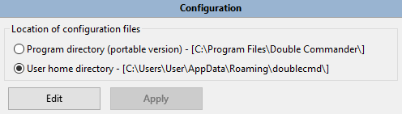

此 doublecmd.xml 文件的位置可能在不同的地方：
我们通过 这个链接 来指定它，使用命令行参数 --config-dir。
除此之外，我们在配置 > 选项... > 树中选择 > 设置选项 配置文件的位置。

另一种快速查找当前实例的 Double Commander 所在位置的方法是访问 常用文件夹列表。在其末尾有一个名为“特殊目录”的子部分。然后我们选择“转到 Double Commander 特殊路径”，接着选择“%DC_CONFIG_PATH%”。我们将在那里找到该应用程序当前使用的 doublecmd.xml 。
在Double Commander中，大多数可能的设置可以通过应用程序本身通过各种选项类别进行设置。
我们只需从主菜单栏点击配置 > 选项，那里配置的各种设置将在我们关闭应用程序时保存到 doublecmd.xml 文件中。然后，它们将在下次使用应用程序时恢复。
所以一般来说，我们不需要手动编辑配置文件的内容。
但有一些非常罕见的特定设置需要从配置文件中手动编辑，如果我们想要调整应用程序。
警告： 在Double Commander运行时，我们将不会编辑该文件！不仅因为在启动应用程序时它们的值是只读的，还因为如果我们在 DC 运行时编辑文件，当我们关闭应用程序时，我们所写的值将被应用程序重新保存其当前上下文以供下次会话而覆盖。如果我们需要编辑 doublecmd.xml 文件，我们需要确保关闭Double Commander，然后编辑文件，最后重新启动应用程序。
还有一个替代方案，更多细节请见这里（但要对某些参数应用更改，您可能仍然需要重新启动应用程序）。
下表提供了这些罕见的特定设置，如果我们需要更改它们，就需要手动编辑文件。
| 如果需要，设置必须手动更改 | |||||||||||||||||||||
|---|---|---|---|---|---|---|---|---|---|---|---|---|---|---|---|---|---|---|---|---|---|
| 标签 | 描述 | ||||||||||||||||||||
<Mode> 来自 <AutoRefresh> |
删除已监视目录的能力。 “监视目录”是指Double Commander在其上有一种钩子的目录，因此它可以监控其中的任何修改。 这样，如果内容发生变化，它可以刷新可显示的内容。 此设置允许控制当我们尝试删除当前在面板中显示的“监视目录”之一时，Double Commander将如何反应，即使在未激活的选项卡中也是如此。
<Mode>1</Mode>
|
||||||||||||||||||||
<ActiveRight> 来自 <Behaviours> |
右侧面板将在Double Commander启动时激活。
<ActiveRight>True</ActiveRight>
|
||||||||||||||||||||
< ConfirmQuit> 来自 <Behaviours> |
确认是否关闭 Double Commander (True) 或不关闭 (False)。默认值为 False。 |
||||||||||||||||||||
<gBorderFrameWidth> 来自 <Colors> |
我们可以配置 DC，使其在我们在面板中循环浏览活动条目时，围绕活动条目绘制一个矩形。<gBorderFrameWidth> 允许我们配置用于绘制当前活动条目周围矩形的线条宽度。要查看该矩形，我们应该进入配置 > 选项... > 颜色 > 文件面板，并勾选选项 使用框架光标。 示例： <gBorderFrameWidth>1</gBorderFrameWidth>
|
||||||||||||||||||||
<FindWordAtCursor> 来自 <Editor> |
内部编辑器和差异工具：如果没有选择任何内容，搜索和替换对话框将使用光标下的单词（True）或搜索历史中的文本（False）。默认情况下为True。 |
||||||||||||||||||||
<AutoExtractOpenMask> 来自 <FileOperations> |
假设我们已经“进入”一个压缩文件，并在活动面板中浏览其内容。当我们按下 Enter 或双击这些具有指定扩展名的文件时，它们将自动从归档中解压，而不是显示属性窗口。 示例： <AutoExtractOpenMask>*.txt;*.mp3;*.mp4</AutoExtractOpenMask>
|
||||||||||||||||||||
<LongNameAlert> 来自<FileOperations> |
如果目标路径超过路径的最大长度，则发出警告（某些程序将无法访问具有如此长名称的文件/目录）。在 Windows 中，此值（MAX_PATH）定义为 260 个字符。默认情况下为True。 |
||||||||||||||||||||
<NtfsHourTimeDelay> 来自 <FileOperations> |
忽略条目之间的时间差为正好一小时时的日期和时间比较。 这发生在使用内部命令 cm_CompareDirectories 或 cm_SyncDirs 时。 在比较位于 NTFS 分区的项目与不在该分区的其他项目时，这非常有用。 由于NTFS 分区中的文件时间戳在夏令时期间会发生变化，而同一文件在 FAT32 中则不会，因此我们希望这两个文件被视为相同，即使我们明显看到它们之间有一个小时的差异。
<NtfsHourTimeDelay>True</NtfsHourTimeDelay>
|
||||||||||||||||||||
<CopyAttributes> 来自 <FileOperations><Options> |
Windows：如果 True，在复制/移动文件时，源文件的属性将被复制；如果 False，源文件的属性也将被复制，并且 Double Commander 将设置“归档”属性。Linux 和其他系统：在 复制/移动对话窗口 中使用 复制属性 参数。 默认值为 True 。
|
||||||||||||||||||||
<CopyTime> 来自<FileOperations><Options> |
Windows：如果 True，在复制/移动文件时，源文件的时间戳（创建日期、修改日期、最后访问日期）将被复制；否则，仅复制修改日期，其他日期将使用当前日期。Linux 和其他系统：在 复制/移动对话窗口 中使用 复制日期/时间 参数。 默认值为 True。
|
||||||||||||||||||||
<CopyXattributes> 来自 <FileOperations><Options> |
在复制/移动文件时是否复制文件系统扩展属性。 Windows：如果 True，则压缩和加密属性也将被复制。Linux 和其他类 Unix 系统：如果 True，Double Commander 将复制文件系统扩展属性（xattr，即命名属性）。默认值为 True。
|
||||||||||||||||||||
<ExtraLineSpan> 来自 <FilesViews> |
此设置允许为文件面板中显示的每个元素的高度添加一些额外的像素。 该值直接以像素为单位。 默认值为 2。 示例： <ExtraLineSpan>2</ExtraLineSpan>
|
||||||||||||||||||||
<FolderPrefix> 和 来自 <FilesViews> |
默认情况下，DC 在目录名称周围显示方括号（这是文件视图中的可选参数 > 文件视图额外），但我们可以使用任何符号代替它们。 注意：在 XML 中，一些特殊符号被保留作为标记的一部分，我们不能直接使用它们。有五个预定义实体： < 应写为 <，> 应写为 >，& 应写为 &，' 应写为 '，" 应写为 "。
|
||||||||||||||||||||
<AutoSaveWidth> 来自 <FilesViews><ColumnsView> |
当我们手动使用鼠标调整列宽时，默认情况下，DC 会同时为两个面板更改列宽，并保存一个新值以供下次启动使用。 如果我们想禁用这种行为并仅在当前会话中使用新值，我们应该将 True 替换为 False，即使用 <AutoSaveWidth>False</AutoSaveWidth> 。
|
||||||||||||||||||||
<LongInStatus> 来自 <FilesViews><ColumnsView> |
如果设置了列视图且没有选定的文件，状态栏会显示光标下的文件名（True）或文件数量（False，默认情况下）。如果 True，状态栏还会在光标位于“..”项时显示文件数量。对于链接，目标对象将额外显示。 |
||||||||||||||||||||
<TitleStyle> 来自 <FilesViews><ColumnsView> |
更改制表符标题栏的外观。 默认值取决于您的操作系统。
<TitleStyle>2</TitleStyle>
|
||||||||||||||||||||
<Quality> 来自标签 <Fonts> |
确定将使用哪种字体光栅化。换句话说，它决定了字体的质量。 有许多标签可以单独适用。
<Quality>1</Quality>
|
||||||||||||||||||||
<CustomIcons> 来自<Icons> |
仅限 Windows：此选项将帮助确定用于驱动器、文件夹或归档的图标是否为系统默认图标，或者是否为我们可以自定义的图标。CustomIcons 选项将设置为一个单一数字，该数字表示根据我们的偏好从以下表格中数字的总和：
如果我们想要... ...全部用系统默认：0 + 0 + 0 = 0 所以 <CustomIcons>0</CustomIcons>...全部都是定制的：1 + 2 + 4 = 7 所以 <CustomIcons>7</CustomIcons>...驱动器自定义，其他是系统默认：1 + 0 + 0 = 1 所以 <CustomIcons>1</CustomIcons>等等... 如果我们希望使用自定义图标，以下是每个项目的位置：
|
||||||||||||||||||||
<DiskAlpha> 来自 <Icons> |
设置未挂载驱动器图标透明度的选项。
|
||||||||||||||||||||
<ToolSize> 来自 <Icons> |
内部编辑器、查看器和差异工具中工具栏图标的大小，支持的值：16、24 或 32。 | ||||||||||||||||||||
<ShowColonAfterDrive> 来自 <Layout> |
仅限 Windows：在驱动器按钮栏和驱动器列表中，在磁盘字母后显示冒号。默认值为False。 |
||||||||||||||||||||
<UppercaseDriveLetter> 来自 <Layout> |
仅限 Windows：在驱动器按钮栏和驱动器列表中使用大写字母。默认值为False。 |
||||||||||||||||||||
< SystemItemProperties> 来自 <Miscellaneous> |
Linux/FreeBSD：True 值允许使用文件管理器的文件属性对话框，该对话框在桌面环境设置中指定为默认程序（如果可能），否则，Double Commander 将使用其自己的 属性窗口。默认值为 False。 |
||||||||||||||||||||
Attribute Save 来自 <SyncDirs><Asymmetric> |
同步目录：默认情况下保存或不保存非对称模式。 如果我们想保存模式的状态，那么 <Asymmetric Save="True">
或 <Asymmetric Save="False"> 否则（默认情况下）。
|
||||||||||||||||||||
Attribute Save 从 <SyncDirs><FileMask> |
同步目录：默认情况下，程序将最后使用的文件掩码保存为下次运行同步工具的默认掩码（如果它不是搜索模板）
要禁用此行为，我们可以将 True 替换为 False<FileMask Save="False">并且 DC 将默认每次建议<FileMask> 的值（默认是“*”，即所有文件）。 |
||||||||||||||||||||
<DateTimeFormat> 来自 <SyncDirs> |
此设置允许在目录同步工具中指定首选的日期和时间格式。日期和时间格式符号在这里描述。 默认值为 yyyy.mm.dd hh:nn:ss。 |
||||||||||||||||||||
<AutoCopy> 来自 <Viewer> |
对于内部查看器，启用（True）或禁用（False）将选定文本自动复制到剪贴板。默认情况下为True。 |
||||||||||||||||||||
<ExtraLineSpan> 来自 <Viewer> |
对于内部查看器，此设置允许为每行增加一些额外的像素高度。 该值直接以像素为单位进行解释。 默认值为 0。 示例： <ExtraLineSpan>2</ExtraLineSpan>
|
||||||||||||||||||||
<ImageExifRotate> 来自 <Viewer> |
Double Commander能够识别可能编码在 JPEG 图像文件中的EXIF元数据格式。 在该元数据中，有一个方向标志，可以用来将图片显示为拍摄时的相同方向，例如竖屏、横屏、倒置、镜像等。 ImageExifRotate 标签配置Double Commander，以指示我们是否希望查看器使用该信息显示图像。
<ImageExifRotate>True</ImageExifRotate>
|
||||||||||||||||||||
<JpegQuality> 来自 <Viewer> |
对于内部查看器，Double Commander 在保存为 JPEG 格式时默认使用的质量值（命令 保存 和 另存为...）。默认值为 80。 | ||||||||||||||||||||
<LeftMargin> 来自 <Viewer> |
对于内部查看器，此选项允许在窗口的左边框和文本边框之间添加空间。 该值直接以像素为单位进行解释。 默认值为 4。 示例： <LeftMargin>4</LeftMargin>
|
||||||||||||||||||||
<MaxTextWidth> 来自 <Viewer> |
对于内部查看器，配置在换行到下一行之前可以显示的最大字符数。 有效范围为 80 到 16384，默认值为 1024。 示例： <MaxTextWidth>1024</MaxTextWidth>
|
||||||||||||||||||||
<SynEditMask> 来自 <Viewer> |
对于内部查看器，此选项允许管理代码视图模式的文件扩展名列表（当然，在可用列表内）。 我们可以指定文件掩码（用分号“;”分隔且不带空格），这些文件将自动以此模式打开，而不是以纯文本形式打开，或者指定要排除的搜索模板名称。我们还可以通过设置空字符串来禁用此模式下文件的自动打开。 默认值为“*”。 | ||||||||||||||||||||
<TabSpaces> 来自 <Viewer> |
对于内部查看器，设置制表符停靠的宽度以供使用。 有效范围为 1 到 32，默认值为 8。 示例： <TabSpaces>4</TabSpaces>
|
||||||||||||||||||||